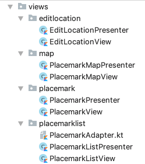

Objectives
Complete the presenter pattern implementation, introducing BaseView & BasePresenter classes
Solutions
Exercise 1
Convert the PlacemarkMaps Activity into PlacemarkMapView + PlacemarkPresenter. Perhaps aim for this final structure:

Exercise 1 Solution
PlacemarkMapPresenter
package org.wit.placemark.views.map
import com.google.android.gms.maps.CameraUpdateFactory
import com.google.android.gms.maps.GoogleMap
import com.google.android.gms.maps.model.LatLng
import com.google.android.gms.maps.model.Marker
import com.google.android.gms.maps.model.MarkerOptions
import org.wit.placemark.main.MainApp
class PlacemarkMapPresenter(val view: PlacemarkMapView) {
var app: MainApp
init {
app = view.application as MainApp
}
fun doPopulateMap(map: GoogleMap) {
map.uiSettings.setZoomControlsEnabled(true)
map.setOnMarkerClickListener(view)
app.placemarks.findAll().forEach {
val loc = LatLng(it.lat, it.lng)
val options = MarkerOptions().title(it.title).position(loc)
map.addMarker(options).tag = it.id
map.moveCamera(CameraUpdateFactory.newLatLngZoom(loc, it.zoom))
}
}
fun doMarkerSelected(marker: Marker) {
val tag = marker.tag as Long
val placemark = app.placemarks.findById(tag)
if (placemark != null) view.showPlacemark(placemark)
}
}PlacemarkMapView
package org.wit.placemark.views.map
import android.os.Bundle
import android.support.v7.app.AppCompatActivity
import com.google.android.gms.maps.GoogleMap
import com.google.android.gms.maps.model.Marker
import org.wit.placemark.R
import kotlinx.android.synthetic.main.activity_placemark_map.*
import kotlinx.android.synthetic.main.content_placemark_map.*
import org.wit.placemark.helpers.readImageFromPath
import org.wit.placemark.models.PlacemarkModel
class PlacemarkMapView : AppCompatActivity(), GoogleMap.OnMarkerClickListener {
lateinit var presenter: PlacemarkMapPresenter
override fun onCreate(savedInstanceState: Bundle?) {
super.onCreate(savedInstanceState)
setContentView(R.layout.activity_placemark_map)
setSupportActionBar(toolbarMaps)
presenter = PlacemarkMapPresenter(this)
mapView.onCreate(savedInstanceState);
mapView.getMapAsync {
presenter.doPopulateMap(it)
}
}
fun showPlacemark(placemark: PlacemarkModel) {
currentTitle.text = placemark.title
currentDescription.text = placemark.description
imageView.setImageBitmap(readImageFromPath(this, placemark.image))
}
override fun onMarkerClick(marker: Marker): Boolean {
presenter.doMarkerSelected(marker)
return true
}
override fun onDestroy() {
super.onDestroy()
mapView.onDestroy()
}
override fun onLowMemory() {
super.onLowMemory()
mapView.onLowMemory()
}
override fun onPause() {
super.onPause()
mapView.onPause()
}
override fun onResume() {
super.onResume()
mapView.onResume()
}
override fun onSaveInstanceState(outState: Bundle?) {
super.onSaveInstanceState(outState)
mapView.onSaveInstanceState(outState)
}
}AndroidManifest.xml
<activity
android:name=".views.map.PlacemarkMapView"
android:label="@string/title_activity_placemark_maps"
android:theme="@style/AppTheme"></activity>activity_placemark_map.xml
<android.support.design.widget.CoordinatorLayout xmlns:android="http://schemas.android.com/apk/res/android"
xmlns:app="http://schemas.android.com/apk/res-auto"
xmlns:tools="http://schemas.android.com/tools"
android:layout_width="match_parent"
android:layout_height="match_parent"
tools:context="org.wit.placemark.views.map.PlacemarkMapView">
...
<include layout="@layout/content_placemark_map" />
...content_placemark_map.xml
<android.support.constraint.ConstraintLayout xmlns:android="http://schemas.android.com/apk/res/android"
xmlns:app="http://schemas.android.com/apk/res-auto"
xmlns:tools="http://schemas.android.com/tools"
android:layout_width="match_parent"
android:layout_height="match_parent"
app:layout_behavior="@string/appbar_scrolling_view_behavior"
tools:context="org.wit.placemark.views.map.PlacemarkMapView"
tools:showIn="@layout/activity_placemark_map">
...Solutions
Exercise 2:
Simplify the UX for PlacemarkActivity, removing the Add Placemark button, and including a save menu option to perform equivalent functionality:

Solution
strings.xml
<string name="menu_savePlacemark">Save</string>menu_placemark.xml
<?xml version="1.0" encoding="utf-8"?>
<menu xmlns:android="http://schemas.android.com/apk/res/android"
xmlns:app="http://schemas.android.com/apk/res-auto">
<item
android:id="@+id/item_save"
android:title="@string/menu_savePlacemark"
app:showAsAction="always"/>
<item
android:id="@+id/item_delete"
android:title="@string/menu_deletePlacemark"
app:showAsAction="always"/>
</menu>activity_placemark
<?xml version="1.0" encoding="utf-8"?>
<android.support.constraint.ConstraintLayout
xmlns:android="http://schemas.android.com/apk/res/android"
xmlns:app="http://schemas.android.com/apk/res-auto"
xmlns:tools="http://schemas.android.com/tools"
android:layout_width="match_parent"
android:layout_height="match_parent"
tools:context="org.wit.placemark.views.placemark.PlacemarkView">
<android.support.design.widget.AppBarLayout
android:id="@+id/appBarLayout"
android:layout_width="match_parent"
android:layout_height="wrap_content"
android:background="@color/colorAccent"
android:fitsSystemWindows="true"
app:elevation="0dip"
app:theme="@style/ThemeOverlay.AppCompat.Dark.ActionBar">
<android.support.v7.widget.Toolbar
android:id="@+id/toolbarAdd"
android:layout_width="match_parent"
android:layout_height="wrap_content"
app:titleTextColor="@color/colorPrimary" />
</android.support.design.widget.AppBarLayout>
<android.support.constraint.ConstraintLayout
android:layout_width="match_parent"
android:layout_height="600dp"
android:layout_marginEnd="8dp"
android:layout_marginStart="8dp"
app:layout_constraintEnd_toEndOf="parent"
app:layout_constraintStart_toStartOf="parent"
app:layout_constraintTop_toTopOf="parent">
<EditText
android:id="@+id/placemarkTitle"
android:layout_width="365dp"
android:layout_height="wrap_content"
android:layout_marginEnd="8dp"
android:layout_marginStart="8dp"
android:layout_marginTop="64dp"
android:ems="10"
android:hint="@string/hint_placemarkTitle"
android:inputType="text"
app:layout_constraintEnd_toEndOf="parent"
app:layout_constraintHorizontal_bias="0.503"
app:layout_constraintStart_toStartOf="parent"
app:layout_constraintTop_toTopOf="parent" />
<EditText
android:id="@+id/description"
android:layout_width="365dp"
android:layout_height="wrap_content"
android:layout_marginEnd="8dp"
android:layout_marginStart="8dp"
android:layout_marginTop="8dp"
android:ems="10"
android:hint="@string/hint_placemarkDescription"
android:inputType="textPersonName"
app:layout_constraintEnd_toEndOf="parent"
app:layout_constraintStart_toStartOf="parent"
app:layout_constraintTop_toBottomOf="@+id/placemarkTitle" />
<Button
android:id="@+id/chooseImage"
android:layout_width="158dp"
android:layout_height="wrap_content"
android:layout_marginStart="8dp"
android:text="@string/button_addImage"
app:layout_constraintStart_toStartOf="parent"
app:layout_constraintTop_toBottomOf="@+id/description" />
<Button
android:id="@+id/placemarkLocation"
android:layout_width="167dp"
android:layout_height="wrap_content"
android:layout_marginEnd="8dp"
android:text="@string/button_location"
app:layout_constraintEnd_toEndOf="parent"
app:layout_constraintTop_toBottomOf="@+id/description" />
<ImageView
android:id="@+id/placemarkImage"
android:layout_width="0dp"
android:layout_height="0dp"
android:layout_marginStart="8dp"
android:layout_marginTop="8dp"
android:layout_marginEnd="8dp"
android:layout_marginBottom="8dp"
app:layout_constraintBottom_toBottomOf="parent"
app:layout_constraintEnd_toEndOf="parent"
app:layout_constraintHorizontal_bias="0.555"
app:layout_constraintStart_toStartOf="parent"
app:layout_constraintTop_toBottomOf="@+id/placemarkLocation"
app:layout_constraintVertical_bias="0.173"
app:srcCompat="@drawable/ic_launcher_background" />
</android.support.constraint.ConstraintLayout>
</android.support.constraint.ConstraintLayout>PlacemarkView
package org.wit.placemark.views.placemark
import android.content.Intent
import android.support.v7.app.AppCompatActivity
import android.os.Bundle
import android.view.Menu
import android.view.MenuItem
import kotlinx.android.synthetic.main.activity_placemark.*
import org.jetbrains.anko.AnkoLogger
import org.jetbrains.anko.toast
import org.wit.placemark.R
import org.wit.placemark.helpers.readImageFromPath
import org.wit.placemark.models.PlacemarkModel
class PlacemarkView : AppCompatActivity(), AnkoLogger {
lateinit var presenter: PlacemarkPresenter
var placemark = PlacemarkModel()
override fun onCreate(savedInstanceState: Bundle?) {
super.onCreate(savedInstanceState)
setContentView(R.layout.activity_placemark)
toolbarAdd.title = title
setSupportActionBar(toolbarAdd)
presenter = PlacemarkPresenter(this)
chooseImage.setOnClickListener { presenter.doSelectImage() }
placemarkLocation.setOnClickListener { presenter.doSetLocation() }
}
fun showPlacemark(placemark: PlacemarkModel) {
placemarkTitle.setText(placemark.title)
description.setText(placemark.description)
placemarkImage.setImageBitmap(readImageFromPath(this, placemark.image))
if (placemark.image != null) {
chooseImage.setText(R.string.change_placemark_image)
}
}
override fun onCreateOptionsMenu(menu: Menu): Boolean {
menuInflater.inflate(R.menu.menu_placemark, menu)
return super.onCreateOptionsMenu(menu)
}
override fun onOptionsItemSelected(item: MenuItem?): Boolean {
when (item?.itemId) {
R.id.item_delete -> {
presenter.doDelete()
}
R.id.item_save -> {
if (placemarkTitle.text.toString().isEmpty()) {
toast(R.string.enter_placemark_title)
} else {
presenter.doAddOrSave(placemarkTitle.text.toString(), description.text.toString())
}
}
}
return super.onOptionsItemSelected(item)
}
override fun onActivityResult(requestCode: Int, resultCode: Int, data: Intent?) {
super.onActivityResult(requestCode, resultCode, data)
if (data != null) {
presenter.doActivityResult(requestCode, resultCode, data)
}
}
override fun onBackPressed() {
presenter.doCancel()
}
}BaseView/Presenter
These new classes will implement some commonality that can be extracted from our MVP implementation.
First, a base class for all Presenters:
BasePresenter
package org.wit.placemark.views
import android.content.Intent
import org.wit.placemark.main.MainApp
open class BasePresenter(var view: BaseView?) {
var app: MainApp = view?.application as MainApp
open fun doActivityResult(requestCode: Int, resultCode: Int, data: Intent) {
}
open fun doRequestPermissionsResult(requestCode: Int, permissions: Array<String>, grantResults: IntArray) {
}
open fun onDestroy() {
view = null
}
}Notice this is where we keep our app reference.
THen the base class for all Views:
BaseView
package org.wit.placemark.views
import android.content.Intent
import android.os.Parcelable
import android.support.v7.app.AppCompatActivity
import android.support.v7.widget.Toolbar
import org.jetbrains.anko.AnkoLogger
import org.wit.placemark.models.PlacemarkModel
import org.wit.placemark.views.editlocation.EditLocationView
import org.wit.placemark.views.map.PlacemarkMapView
import org.wit.placemark.views.placemark.PlacemarkView
import org.wit.placemark.views.placemarklist.PlacemarkListView
val IMAGE_REQUEST = 1
val LOCATION_REQUEST = 2
enum class VIEW {
LOCATION, PLACEMARK, MAPS, LIST
}
open abstract class BaseView() : AppCompatActivity(), AnkoLogger {
var basePresenter: BasePresenter? = null
fun navigateTo(view: VIEW, code: Int = 0, key: String = "", value: Parcelable? = null) {
var intent = Intent(this, PlacemarkListView::class.java)
when (view) {
VIEW.LOCATION -> intent = Intent(this, EditLocationView::class.java)
VIEW.PLACEMARK -> intent = Intent(this, PlacemarkView::class.java)
VIEW.MAPS -> intent = Intent(this, PlacemarkMapView::class.java)
VIEW.LIST -> intent = Intent(this, PlacemarkListView::class.java)
}
if (key != "") {
intent.putExtra(key, value)
}
startActivityForResult(intent, code)
}
fun initPresenter(presenter: BasePresenter): BasePresenter {
basePresenter = presenter
return presenter
}
fun init(toolbar: Toolbar) {
toolbar.title = title
setSupportActionBar(toolbar)
}
override fun onDestroy() {
basePresenter?.onDestroy()
super.onDestroy()
}
override fun onActivityResult(requestCode: Int, resultCode: Int, data: Intent?) {
super.onActivityResult(requestCode, resultCode, data)
if (data != null) {
basePresenter?.doActivityResult(requestCode, resultCode, data)
}
}
override fun onRequestPermissionsResult(requestCode: Int, permissions: Array<String>, grantResults: IntArray) {
basePresenter?.doRequestPermissionsResult(requestCode, permissions, grantResults)
}
open fun showPlacemark(placemark: PlacemarkModel) {}
open fun showPlacemarks(placemarks: List<PlacemarkModel>) {}
open fun showProgress() {}
open fun hideProgress() {}
}This is more involved, including:
- utility method for launching activities
- some default lifecycle implementations
- shared initialisation of the toolbar
- stubbed specification of useful methods which concrete View classes will implement.
PlacemarkPresenter/View
Notice in this implementation that the view reference may be null, thus all access is via null safe calls.
PlacemarkPresenter
package org.wit.placemark.views.placemark
import android.content.Intent
import org.wit.placemark.helpers.showImagePicker
import org.wit.placemark.models.Location
import org.wit.placemark.models.PlacemarkModel
import org.wit.placemark.views.*
class PlacemarkPresenter(view: BaseView) : BasePresenter(view) {
var placemark = PlacemarkModel()
var defaultLocation = Location(52.245696, -7.139102, 15f)
var edit = false;
init {
if (view.intent.hasExtra("placemark_edit")) {
edit = true
placemark = view.intent.extras.getParcelable<PlacemarkModel>("placemark_edit")
view.showPlacemark(placemark)
}
}
fun doAddOrSave(title: String, description: String) {
placemark.title = title
placemark.description = description
if (edit) {
app.placemarks.update(placemark)
} else {
app.placemarks.create(placemark)
}
view?.finish()
}
fun doCancel() {
view?.finish()
}
fun doDelete() {
app.placemarks.delete(placemark)
view?.finish()
}
fun doSelectImage() {
view?.let{
showImagePicker(view!!, IMAGE_REQUEST)
}
}
fun doSetLocation() {
if (edit == false) {
view?.navigateTo(VIEW.LOCATION, LOCATION_REQUEST, "location", defaultLocation)
} else {
view?.navigateTo(VIEW.LOCATION, LOCATION_REQUEST, "location", Location(placemark.lat, placemark.lng, placemark.zoom))
}
}
override fun doActivityResult(requestCode: Int, resultCode: Int, data: Intent) {
when (requestCode) {
IMAGE_REQUEST -> {
placemark.image = data.data.toString()
view?.showPlacemark(placemark)
}
LOCATION_REQUEST -> {
val location = data.extras.getParcelable<Location>("location")
placemark.lat = location.lat
placemark.lng = location.lng
placemark.zoom = location.zoom
}
}
}
}This is the view:
PlacemarkView
import org.wit.placemark.views.BaseView
class PlacemarkView : BaseView(), AnkoLogger {
lateinit var presenter: PlacemarkPresenter
var placemark = PlacemarkModel()
override fun onCreate(savedInstanceState: Bundle?) {
super.onCreate(savedInstanceState)
setContentView(R.layout.activity_placemark)
init(toolbarAdd)
presenter = initPresenter (PlacemarkPresenter(this)) as PlacemarkPresenter
chooseImage.setOnClickListener { presenter.doSelectImage() }
placemarkLocation.setOnClickListener { presenter.doSetLocation() }
}
override fun showPlacemark(placemark: PlacemarkModel) {
placemarkTitle.setText(placemark.title)
description.setText(placemark.description)
placemarkImage.setImageBitmap(readImageFromPath(this, placemark.image))
if (placemark.image != null) {
chooseImage.setText(R.string.change_placemark_image)
}
}
override fun onCreateOptionsMenu(menu: Menu): Boolean {
menuInflater.inflate(R.menu.menu_placemark, menu)
return super.onCreateOptionsMenu(menu)
}
override fun onOptionsItemSelected(item: MenuItem?): Boolean {
when (item?.itemId) {
R.id.item_delete -> {
presenter.doDelete()
}
R.id.item_save -> {
if (placemarkTitle.text.toString().isEmpty()) {
toast(R.string.enter_placemark_title)
} else {
presenter.doAddOrSave(placemarkTitle.text.toString(), description.text.toString())
}
}
}
return super.onOptionsItemSelected(item)
}
override fun onActivityResult(requestCode: Int, resultCode: Int, data: Intent?) {
super.onActivityResult(requestCode, resultCode, data)
if (data != null) {
presenter.doActivityResult(requestCode, resultCode, data)
}
}
override fun onBackPressed() {
presenter.doCancel()
}
}PlacemarkListView/Presenter
Notice in the presenter a more attractive signature for launching activities in the navigateTo method:
PlacemarkListPresenter
package org.wit.placemark.views.placemarklist
import org.wit.placemark.models.PlacemarkModel
import org.wit.placemark.views.BasePresenter
import org.wit.placemark.views.BaseView
import org.wit.placemark.views.VIEW
class PlacemarkListPresenter(view: BaseView) : BasePresenter(view) {
fun doAddPlacemark() {
view?.navigateTo(VIEW.PLACEMARK)
}
fun doEditPlacemark(placemark: PlacemarkModel) {
view?.navigateTo(VIEW.PLACEMARK, 0, "placemark_edit", placemark)
}
fun doShowPlacemarksMap() {
view?.navigateTo(VIEW.MAPS)
}
fun loadPlacemarks() {
view?.showPlacemarks(app.placemarks.findAll())
}
}This is the view:
PlacemarkListView
package org.wit.placemark.views.placemarklist
import android.content.Intent
import android.os.Bundle
import android.support.v7.widget.LinearLayoutManager
import android.view.*
import kotlinx.android.synthetic.main.activity_placemark_list.*
import org.wit.placemark.R
import org.wit.placemark.models.PlacemarkModel
import org.wit.placemark.views.BaseView
class PlacemarkListView : BaseView(), PlacemarkListener {
lateinit var presenter: PlacemarkListPresenter
override fun onCreate(savedInstanceState: Bundle?) {
super.onCreate(savedInstanceState)
setContentView(R.layout.activity_placemark_list)
init(toolbarMain)
presenter = initPresenter(PlacemarkListPresenter(this)) as PlacemarkListPresenter
val layoutManager = LinearLayoutManager(this)
recyclerView.layoutManager = layoutManager
presenter.loadPlacemarks()
}
override fun showPlacemarks(placemarks: List<PlacemarkModel>) {
recyclerView.adapter = PlacemarkAdapter(placemarks, this)
recyclerView.adapter?.notifyDataSetChanged()
}
override fun onCreateOptionsMenu(menu: Menu?): Boolean {
menuInflater.inflate(R.menu.menu_main, menu)
return super.onCreateOptionsMenu(menu)
}
override fun onOptionsItemSelected(item: MenuItem?): Boolean {
when (item?.itemId) {
R.id.item_add -> presenter.doAddPlacemark()
R.id.item_map -> presenter.doShowPlacemarksMap()
}
return super.onOptionsItemSelected(item)
}
override fun onPlacemarkClick(placemark: PlacemarkModel) {
presenter.doEditPlacemark(placemark)
}
override fun onActivityResult(requestCode: Int, resultCode: Int, data: Intent?) {
presenter.loadPlacemarks()
super.onActivityResult(requestCode, resultCode, data)
}
}Solution
Placemark application so far:
Exercise 1
Using this lab as a guide, convert PlacemarkMapView/Presenter to use the PlacemarkView/Presenter base classes
Exercise 2
Also convert EditLoctionView/Presenter to use the base classes